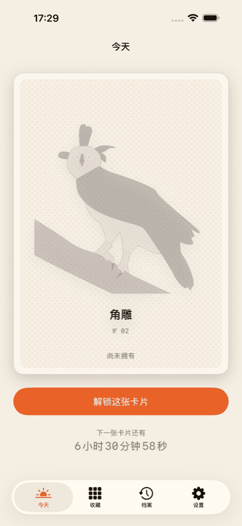
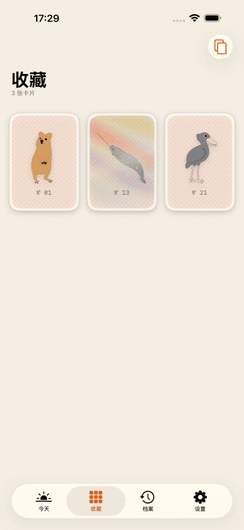
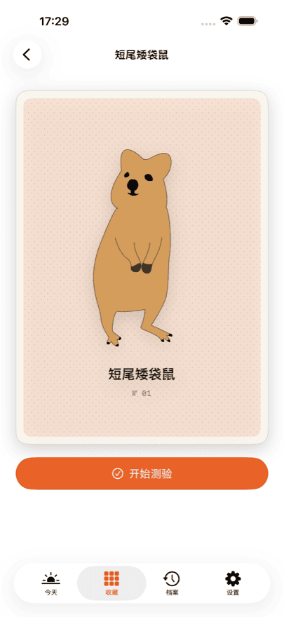
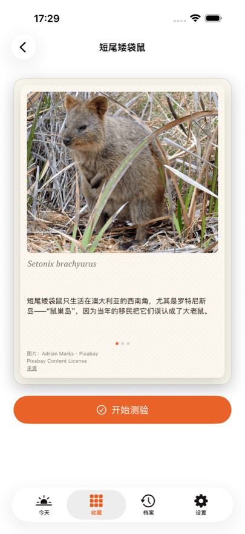
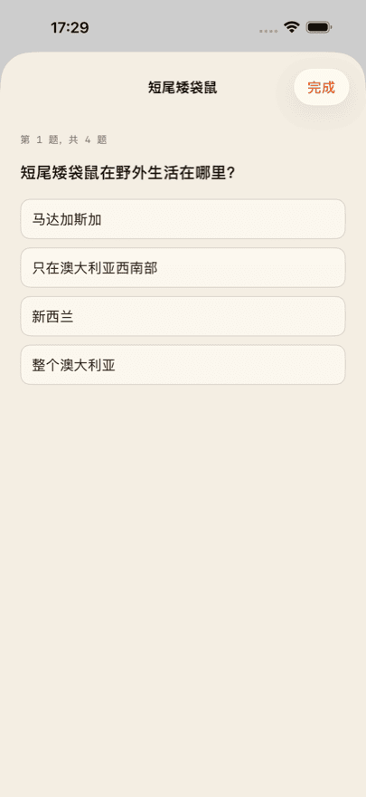

iPhone App
Daily Bestiary
值得收藏的稀有动物卡
每天都有一张手绘的新动物卡片等着你。解锁之后它就是你的：翻到背面，有一张照片、三条知识、学名，以及四道测验题。
前三张卡片免费。其中一张是闪卡——倾斜手机，光泽会在卡面上流动。
Daily Bestiary 即将在 App Store 上架。上架后，这个按钮会直接跳转到 App 页面。
你会得到
-
每天一张
一张，不会更多。当天的卡片按你自己的起始日计算，而不是按日历日期——什么时候开始都可以。
-
一张照片和三条知识
每张背面都有该动物的真实照片、三条知识和学名。
-
每种动物一套测验
每种动物四道题，由一位生物老师审校。随时可以重玩。
-
一份不断长大的收藏
相册里只有你自己的卡片。没有空位，没有“几分之几”，也没有比拼。
-
闪卡
有些卡片会发光：倾斜手机，光泽就会在卡面上移动。
看看界面





Collector
Collector 会打开档案：错过的那一天仍然可以补回来。每天的卡片也包含在内，你还能看到整份收藏的测验统计。
Collector 是订阅，在你取消之前会自动续期。随时可以在 Apple 账户设置中取消。当前的价格和周期请以 App Store 为准，各个国家和地区并不相同。
图片来源
卡片正面的插画为手绘。背面的照片来自可自由使用的来源——Pixabay、Unsplash 和 Wikimedia Commons。
每张照片都在自己那张卡片的背面标注了摄影者、许可协议和来源链接。不是藏在细则里，而是就在图片所在的地方。
常见问题
Daily Bestiary 收费吗？
下载免费，前三张卡片也免费——背面、知识和测验一应俱全。之后你可以单独解锁当天的卡片、购买十张装，或者订阅 Collector。当前价格请以 App Store 为准，各地并不相同。
需要注册账号吗？
不需要。没有注册、没有登录、没有个人资料。App 不会索取姓名或电子邮件地址。
一共有多少张卡片？
任何地方都没有写——App 里没有，这里也没有。写出总数，收藏就变成了进度条，而这正是我们不想要的。当你集齐现有的全部卡片时，App 会告诉你。
错过一天会怎样？
那张卡片不会消失。Collector 会打开档案，可以把错过的日子补回来。没有 Collector 的话，第二天就是下一张卡片。
iPhone 和 iPad 之间会同步吗？
会，只要两台设备用同一个 Apple 账户登录了 iCloud。同步通过你自己的私有 iCloud 数据库进行，开发者无法查看。
重装 App 后购买记录没了？
没有丢失。App 的设置里和每个购买页面上都有“恢复购买”。它会把订阅和剩余次数重新关联到你的 Apple 账户。收藏本身则通过 iCloud 回来。
如何取消 Collector？
通过 Apple 而不是 App：设置 → 你的姓名 → 订阅。可以随时取消，在当前周期结束时生效。App 设置中的 Customer Center 也通向同一个页面。
没有网络能用吗？
可以。所有卡片、照片和题目都随 App 一起提供，不会另行下载。只有购买和 iCloud 同步需要联网。